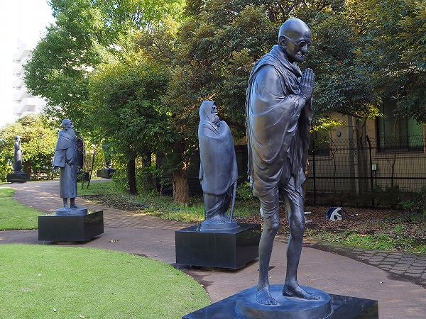

待ちに待った緊急事態宣言解除である。
不要不急の外出を（なるべく）避け、行きつけの酒場には（なるべく）出かけず、たまに出かけるとしてもまるで犯罪者のようにコソコソと行動するという日々から開放されたわけだ。
今後どうなるかわからないけど、ひとまずヒャッホー！って事で。
で、とりあえずリハビリがてら哲学堂公園に行ってみた。
哲学堂公園に関しては当サイトでは1998年の訪問記を掲載していたが、画像もお粗末だし、説明も不十分なので改めてレポートし直すというカタチをとらせてもらいますよ。
久し振りの哲学堂公園。
基本的な説明をしておくと、この哲学堂公園は教育者にして哲学者である井上円了によって創設された。
東洋大学の創設、仏教哲学の研究、さらには妖怪研究者など様々な顔を持つマルチな人物であった。
その井上円了が明治39年から私財を投じて作ったのがこの哲学堂なのだ。
現在は東京都に移管され哲学堂公園として市民の憩いの場となっている。
どちらかといえば地元の人にしてみれば野球場とテニスコートがある公園、という認識だと思う。多分。
しかしその芯である哲学堂は井上氏が哲学をビジュアル化しようと心血注いだ壮絶な思想の実験場だったのだ。
…というわけで早速哲学堂公園で哲学を視覚的に体感してみよう！レッツ哲学！
10月の週末は建築物の内部公開が行われている。
普段は入れない園内の建物がドドーンと公開されている、という訳。
非常事態宣言明けを期して哲学堂を訪れたのはこの内部公開があったからなのだよ。しかも2020年からは国の名勝にもなったし。
で、哲学堂に入るといきなり現れるのがこの門。
理哲門という山門である。
この辺りからすでに井上円了の哲学ワールドは始まっている。
普通の山門であれば仁王像がいるのだが、ここは寺でも神社でもなく、哲学の実践道場なのだ。
山門の左右には幽霊と天狗。
この時点で井上哲学のぶっ飛び具合を思い知らされる。
幽霊は精神界の、天狗は物質界の不可解を象徴する存在として門に納められている、というのだが…解ります？
今後この調子でグイグイ進みますのでお覚悟の程ヨロシクです。
哲理門を潜ると目の前に二つの建物が飛び込んでくる。
↑左が四聖堂、右が六賢臺という建物。
他にも数棟の建物が並んでいる。
このエリアは時空岡と呼ばれており、この哲学堂の中でも最重要エリアなのだ。
本来であれば六賢臺も公開されるはずなのだが、コロナの影響で六賢臺だけは内部公開されていなかった。残念。
というわけで四聖堂へお邪魔しますよ、っと。
四聖堂は一見、普通のお堂に見えるが、四方が正面になっている。
その四面に孔子、釈迦、ソクラテス、カントを祀ってあるのだというが…
こんな感じです。
個人的には寝釈迦像にしか目が行かない。
しかしよく見ると天上からは赤いガラスの玉や謎の言葉が刻まれたオブジェ、中央には南無絶対無限尊と書かれた石柱。
見上げると屋根裏が放射状の垂木になっており、中央には瑣聖（ソクラテス）、孔聖（孔子）、釈聖（釈迦）、韓聖（カント）という額が掲げられている。
これもまた分ったような分からないような…。
お次は宇宙観と呼ばれる建物。
御覧のように宝形型の建物の角の部分に破風が切ってあるという変わった建物。
内部は四角い建物の平面に対して斜め45度に傾いた内陣が設けられている。
その中央に聖徳太子像が安置されている。
建物は近年改装されて綺麗になっている。
見上げると建物と内陣が45度ずれているのがよく判る。
だから何だ、と言われればそれまでだが、宇宙の真理を表現している…のかな？
お次は絶対城。
要は図書館ですね。
ネーミングの圧がいちいち強いのは井上円了のセンスなのだろうか。
洋風と和風がミックスした不思議な建物である。
特に瓦屋根の上の展望台に至る階段がカッコイイ！
そして建物の前の石碑の脇にちょこんと座っている唐子のチビッ子がカワイイ！
中に入ってみますよ。
内部は2層の吹き抜けになっており、中央奥には孔子像、その後ろには聖哲碑がドーンと。
その左右は書庫になっている。
かつては井上円了が集めた蔵書があったが現在は東洋大学に移管されている。
2階は閲覧室になっている。
トップライトから外光が入り、思いの外明るい。
一画に女性専用の婦人室もあった。
その後、しばらく庭園を歩く。
園内は高低差があり水が豊富だ。
先程の建物が密集していたエリアから徐々に下っていくと池がある。
池の向こうは崖、というか遥か下に開渠の妙正寺川が流れている。
菖蒲池。
緊張感ありまくるネーミングが連続するこの哲学堂公園だが、この池だけは普通の名前だ。
池では亀が甲羅干ししていた。
川沿いに進んでいく。
お次に現れたのは心字池。
うむー。何となく先程ののんびりとした菖蒲池とは違って意図的に石が配されていて緊張感あふれる池な気がするぞ…。
先程の菖蒲池に比べて明らかに意図的な「何か」が感じられる…ような気がする。
中でも池の畔に立つ鬼燈と呼ばれる石像は特徴的だ。
鬼の像、なのだろうが何故か頭上に穴が開いていて、そこにどんぐりの実が供えられていた。
遠野のカッパ狛犬みたいですね。
そんなこんなでさらに先に進みますよ。
公園の大部分は妙正寺川の北側に位置するが、川の南側にも公園がある。
そこに哲学の庭というスペースがある。
これは2009年にハンガリー出身の彫刻家によって作られた彫像が並んでいる。
つまり本来の井上円了が創り上げた哲学世界とは違うのだが、折角だから見てみよう。
古今東西の哲学界の偉人が一堂に会している。

こちらは右からガンジー、達磨、聖フランシス。
衝撃的だったのがこちら。
誰かが4人の人に土下座している。
しかも一人は火星人みたいだし。
一体これは何なんだ？
…と思い、キャプションを覗いてみると土下座しているのはアブラハムだという。
アブラハム、といえば私の乏しい脳味噌のストックからは「♪アブラハムには7人の子、一人はノッポで後はチビ♪」という童謡しか浮かんでこない。
どうやらそのアブラハムが拝礼している姿みたいですよ。土下座じゃないんだね。
ちなみにアブラハムは古代イスラエル人の始祖で長男（つまりノッポのことですな）を神に捧げたエピソードが有名なお方だそうです…。
ちなみに他の4名は右から老子、釈迦、キリスト、エクナトンだそうです。
エクナトンとはエジプトの王様で別に火星人じゃなかったのね。
歴史上、有名な人物が一堂に会したからか、写真には神々しいオーブが写ってしまいました（嘘）。
さて、哲学の庭を堪能したところで再び井上円了ワールドに戻りますよ。
再び橋を渡ると狸の石像があった。
お腹に穴が開いている。
まるでお腹に口が付いているかのような異様な出で立ちだ。
その後、梅園などを経由し、今度は徐々に上り坂に。
途中、現れたのは三人の石碑。
ギリシャの賢人タレス、インドの仙人アクシャ・パーダ、中国の黄帝。
この3人に共通点があるのかどうかはサッパリ分からないが、敢えて東西の偉人を同じ場所にミックスさせようという意図だけは感じましたぞよ（違ってたらゴメンね）。
で、小高い丘に登ってみれば、そこは最初に訪れた建物が並ぶエリア、時空岡だった。
無尽蔵と呼ばれる建物に入ってみる。
ここは陳列館の役割を担っており、古くからの資料や写真が展示されている。
先程の鬼の石像の昔の写真。
なるほど、天辺の穴は燈籠のほぞ穴だったのか。
別にどんぐりを納める為の穴じゃなかったのね。
狸のかつての姿。
頭に笠を被っており、口みたいだったお腹は燈籠になっていたんだね。
なるほど、なるほどね。
他にも戦前の様子が写された写真が展示されていて大変興味深かった。
無尽蔵の2階からみた六賢臺。
コロナが本格的に治まったら内部公開されることだろう。
その際は是非再訪して内部を見学したいものだ。
何といっても哲学堂を象徴する建物だからね。
最後に訪れたのは髑髏庵と鬼神窟。
ここは公開されていなかったので外から眺めるだけだったのだが、右手の髑髏庵と左手の鬼神窟は繋がっているのだった、
この辺りで哲学堂巡りはひとます終了となる。お疲れ様でした。
結論として、奇抜なネーミングと建築様式によって世間の常識を打破しようとしているのだろうなあ、という印象だった。
そこには古今東西の様々な概念をミックスさせた民間信仰や同時期の新宗教の手法が見え隠れしており、非常に興味深かった。
この公園、実はハッテン場としても有名なようで、昼間っから結構刺激的なファッションの男性があちこちにいましたなー。
そういう意味では今でも世間の常識を打破し続ける場所なのかも知れないですねー。
うむ。面白かった。良い天気なのでこのまま中野までのんびりと歩いてみよう。
そして久し振りに一杯やっていくこととしよう。